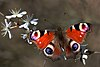

lepidoptera

Definition: Lepidoptera ( lep-ə-DOP-tər-ə) is an order of insects that includes butterflies and moths (both are called lepidopterans). About 180,000 species of the Lepidoptera are described, in 126 families and 46 superfamilies, 10 percent of the total described species of living organisms. It is one of the most widespread and widely recognizable insect orders in the world. The Lepidoptera show many variations of the basic body structure that have evolved to gain advantages in lifestyle and distribution. Recent estimates suggest the order may have more species than earlier thought, and is among the four most species-rich orders, along with the Hymenoptera, Diptera, and Coleoptera.Lepidopteran species are characterized by more than three derived features. The most apparent is the presence of scales that cover the bodies, wings, and a proboscis. The scales are modified, flattened "hairs", and give butterflies and moths their wide variety of colors and patterns. Almost all species have some form of membranous wings, except for a few that have reduced wings or are wingless. Mating and the laying of eggs is normally performed near or on host plants for the larvae. Like most other insects, butterflies and moths are holometabolous, meaning they undergo complete metamorphosis. The larvae are commonly called caterpillars, and are completely different from their adult moth or butterfly forms, having a cylindrical body with a well-developed head, mandible mouth parts, three pairs of thoracic legs and from none up to five pairs of prolegs. As they grow, these larvae change in appearance, going through a series of stages called instars. Once fully matured, the larva develops into a pupa. A few butterflies and many moth species spin a silk case or cocoon prior to pupating, while others do not, instead going underground. A butterfly pupa, called a chrysalis, has a hard skin, usually with no cocoon. Once the pupa has completed its metamorphosis, a sexually mature adult emerges.
Source: Wikipedia
Wikipedia Page (Something wrong with this association? Let us know.)
Wikidata Page (Something wrong with this association? Let us know.)